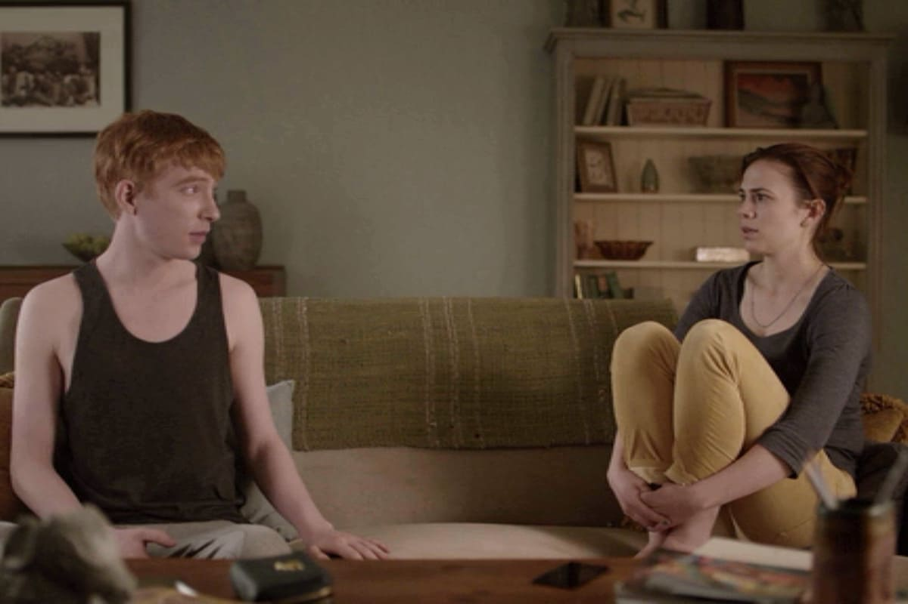
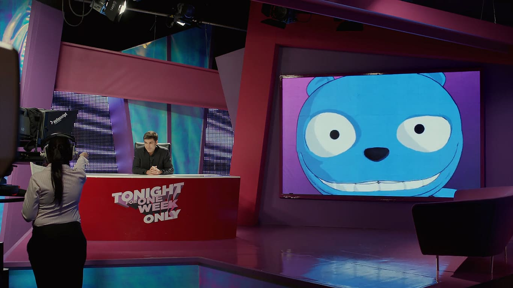

Guía de Episodios: Temporada 2

1. Ahora mismo vuelvo
Martha, una joven que acaba de perder a su novio, recurre a un nuevo servicio online que le permite comunicarse con una réplica de inteligencia artificial de su difunto amado, llevándola por un camino de duelo y negación.

2. Oso Blanco
Una mujer se despierta sin memoria y descubre que la gente la graba con sus móviles mientras es perseguida por cazadores enmascarados. Un thriller psicológico sobre el castigo y el espectáculo en la sociedad moderna.

3. El momento Waldo
Un cómico fracasado que da voz a un oso de dibujos animados se ve envuelto en la política cuando su personaje se convierte en un candidato antisistema inesperadamente popular, cuestionando la autenticidad en la vida pública.